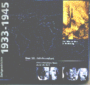
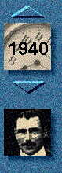

1933 - 1945
Der Weg in den 2. Weltkrieg

Unter diesem programmatischen Titel ist eine CD-ROM erschienen, die die Zeit des Nationalsozialismus darstellt und multimediale Verknüpfung in manchen Bereichen beispielhaft vorführt. Interaktiv heißt das Zauberwort der Multimediawelt, und diese Produktion macht deutlich, wie ausgefeilt die Sprungmöglichkeiten vom Benutzer der CD ausgenutzt werden können.Die Präsentation beginnt mit einer Weltkarte und einer Randleiste, auf der die einzelnen Jahre zwischen 1933 und 1945 und ein Personenindex abgerufen werden können. Von der Weltkarte kommt man per Mausklick weiter, z.B. zu einer Europakarte. Wechselt man die Jahreszahl, werden die Bezugspunkte für die Verweise optisch hervorgehoben und durch Mausbewegung mit einem Icon belegt.

Hier ergibt sich die erste Möglichkeit, in die 2000 Seiten umfassende Text- und Bildwelt der CD hineinzutauchen. Pro Seite führt dann ein halbes bis ein ganzes Dutzend von Querverweisen kreuz und quer und tiefer in die historische Materie hinein, wobei durch Anklicken von entsprechenden Pfeilfeldern immer die Möglichkeit besteht, zum Ausgangspunkt des Informationslabyrinths zurückzukehren. Einige Seiten sind mit Videosequenzen unterlegt, andere mit Tondokumenten, was die Benutzung der Scheibe zu einem audiovisuellen Erlebnis macht. Hier liegt eine Darstellungsweise vor, die sich so nicht durch ein Buch oder eine Videoproduktion ersetzen läßt.
Die zweite Möglichkeit besteht darin, daß man mit den Zahlen des Zeitfeldes und den Feldern der Karte einen Bezugsrahmen definiert und sich dann die Bildschirmseiten abruft, die zu diesem Bezugsrahmen passen. Wählt man z.B. aus, was Polen und die Tschechoslowakei zwischen 1937 und 1939 angeht, werden aus dem Gesamtzusammenhang 45 Seiten präsentiert, die in ihrer Summe doch einen recht anschaulichen Überblick über diese Zeitspanne und die Kriegspläne Hitlers geben.
Soweit die Technik, sie ist in dieser Form als perfekt zu bezeichnen. Die Scheibe setzt laut Verpackung einen i386-Prozessor und mindestens 4 MB RAM voraus. Das allerdings ist schlichtweg irreführend, mit dieser Konfiguration dürfte die Betrachtung nach langen Wartezeiten zwischen den Bildern frustriert eingestellt werden. Ein schneller Prozessor, ein möglichst hoher Arbeitsspeicher, ein möglichst schnelles CD-Laufwerk sind einfach nötig - zu dieser Aussage sollte sich auch ein Verlag durchringen können. Nicht zu letzt deshalb, weil die Hauptdatei auf der CD einen Umfang von fast 700 MB hat, die beim Programmdurchlauf umgewälzt werden müssen.
Die fachliche Kritik darf sich freilich von der Technik nicht blenden lassen. Hier ist anzumerken, daß Art und Weise der Querverweise gewöhnungsbedürftig sind. Es handelt sich nur zum Teil und inhaltliche Erklärungen, zum Teil aber auch um Stichworte, die schlichtweg nur im Programm weiterführen sollen und einen inhaltlichen Bezugspunkt markieren. So führt das im Bild "Bekräftigung des [polnisch-sowjetischen] Nichtangriffspaktes [durch Polen]" unterlegte Stichwort "Olsaland" eben nicht zu einer Erklärung, sondern zurück zur Seite "Zuspitzung der Sudetenkrise". Gerade an dieser Stelle wurde deutlich, daß geographische Begriffe in der Versuchsphase nie zu einer erklärenden Kartenskizze führten. Begriffe wie Sudetenland, Ostpolen, Memelgebiet, und eben auch Olsaland bleiben unerklärt.
Vom fachlichen Gesichtspunkt sind daher einige der Querverweise als oberflächlich zu qualifizieren: Die deutschen "Ansprüche in der Tschechoslowakei" führen zum deutsch-italienischen Vertrag und zum Spanischen Bürgerkrieg, die "hoffnungslose Situation" der tschechischen Regierung Hodza führt zu einem Bild, das sudetendeutsche Freischärler zeigt, die die tschechische Polizei provozieren, das Stichwort "Karpato-Ukraine" führt zu einem Bild des tschechoslowakischen Staatspräsidenten Beneš, die "ungarischen Revisionswünsche" in der Slowakei führen über die Ungarische Nationalsozialistische Partei weiter auf das Bild "Zuspitzung der Sudetenkrise". Auch das Stichwort "Danzig" führt generell nur zu den gescheiterten Verhandlungen vom August 1939 mit Polen, aber nicht zu einer Erklärung, was es mit Danzig überhaupt auf sich hat.
Der Eindruck, daß Zusammenhänge generell auf der Strecke bleiben, zieht sich durch die ganze Produktion. Das Stichwort "ostpolnische Gebiete" im Zusammenhang des sowjetischen Einmarschs in Polen im September 1939 hätte irgendwo auf den historischen Hintergrund der polnisch-sowjetischen Aversionen, den latenten Streit um die polnischen Gebietsgewinne von 1921 und auf die Probleme um ein "Ost-Locarno" und von daher auf die polnische Rolle beim sowjetischen Hilfsangebot in der Krise um die Tschechoslowakei 1938 führen müssen. Ebenso wird der geplante Putsch der Reichswehrgeneräle in der Sudetenkrise 1938 mit dem Nebensatz "... die seine Generäle beinahe zur Revolte trieb" abgetan.
Insgesamt hätte man sich bei einer Produktion mit so hochgesteckten Zielen etwas handwerklich sauberere Arbeit gewünscht, weniger was die durchaus als gelungen zu bezeichnende Technik, sondern was den fachlichen Hintergrund angeht. Die Epoche des Nationalsozialismus läßt sich nicht ohne eine fundierte Darstellung des nationalsozialistischen Gedankenguts und ihre Rezeption in der Zeit der Weimarer Republik darstellen. Es bleibt zu hoffen, daß die CD über jene Zeit das Versäumte nachholt.
Die Gesamtbewertung der CD muß daher trotz gelungener Technik und umfassender Darstellung Abstriche beim fachlichen Hintergrund machen. Nicht nur für die erste, sondern auch noch für die zweite Begegnung mit der nationalsozialistischen Zeit via CD-ROM reicht sie aber aus. Die CD selbst ist nicht dokumentiert, doch der Verlag stellt auf Anforderung "ausführliche Quellennachweise" zur Verfügung.
Das 20. Jahrhundert
Der Weg in den 2. Weltkrieg
1933 - 1945
digital publishing, München, 1995. Vertrieb über Media Sales Buch und Medienvertrieb, Neumarkter Str. 18, 81664 München
DM 98.-; ISBN 3-930947-12-X
 Zurück zur Home-Page von Christoph Bühler
Zurück zur Home-Page von Christoph Bühler
 Zurück zur Leitseite "Geschichte auf CD-ROM"
Zurück zur Leitseite "Geschichte auf CD-ROM"
Diese Besprechungen werden in Zusammenarbeit mit dem Verein Badische Heimat e.V. erstellt
Zur Leitseite "Landeskunde auf CD" der Badischen Heimat e.V.
ChBuehler@aol.com
erstellt 1.3., überarbeitet 15.3.96